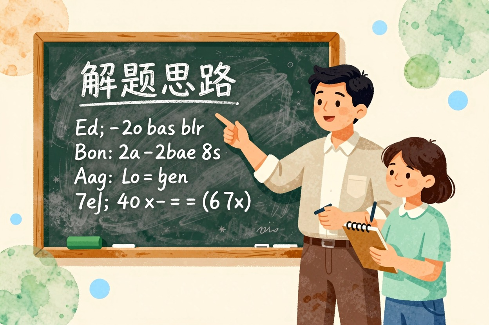
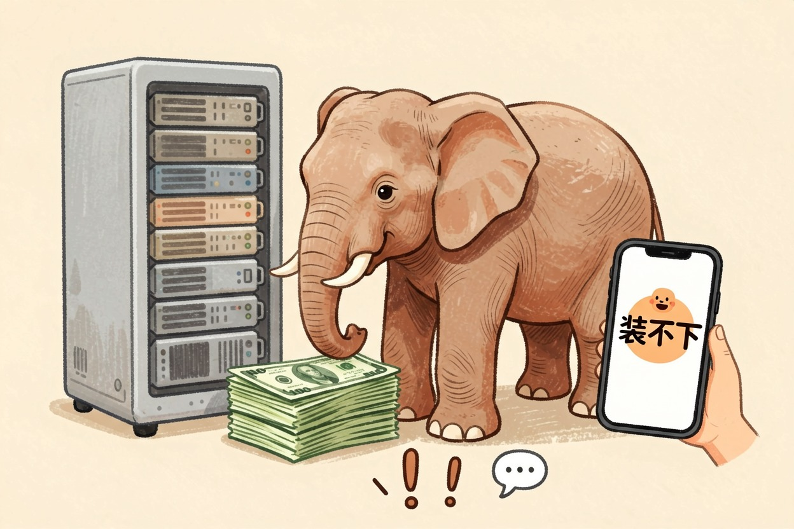
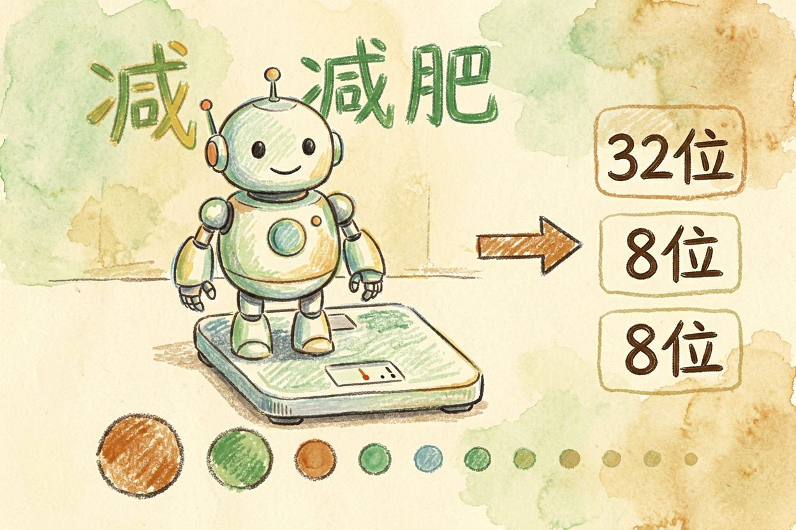
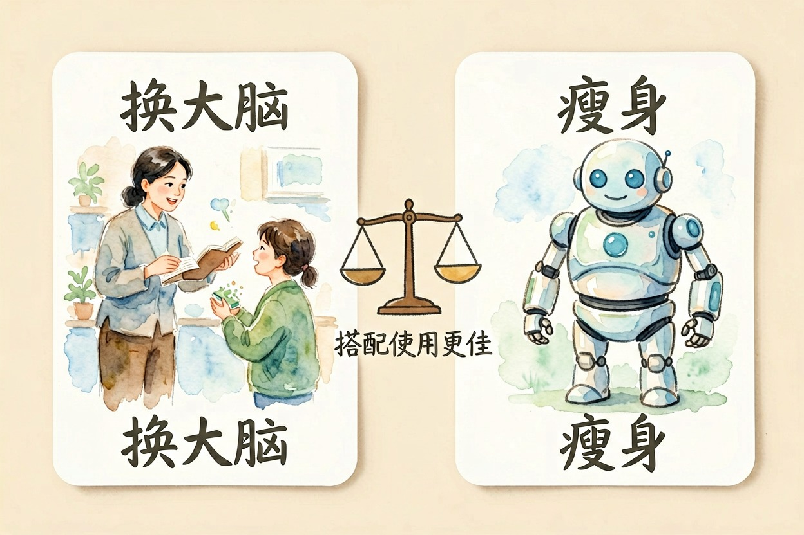
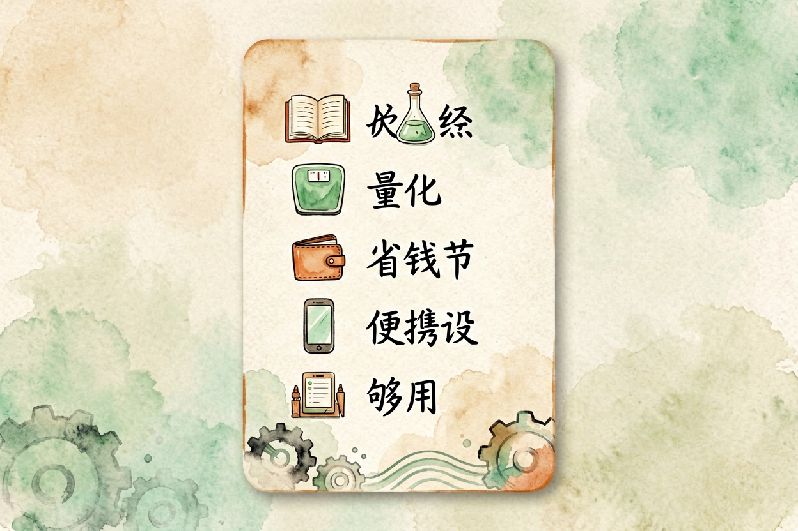

模型蒸馏和量化是什么？通俗解释
大模型像一位知识渊博的老师，蒸馏是让老师把经验浓缩教给学生，量化是给模型瘦身——都是为了变小变快。
模型蒸馏是什么？一句话：让大模型当老师，把自己的经验浓缩教给一个小模型。量化则是给模型「减肥」——把高精度参数换成低精度，体积变小、跑得更快。两个都是让大模型「变小变快」的办法。
模型蒸馏是什么：老师教出个聪明的学生

想象毕业班老师带学生。老师（大模型）教了很多年，解题经验丰富；学生（小模型）还很单薄，但学得快。
蒸馏就是让学生学老师的解题思路，而不是背答案。背答案的学生换个题型就懵，学会思路的学生能举一反三。所以蒸馏出来的小模型，体积小，本事却不小。
这个概念最早由 Hinton 等人在论文里提出，见原始论文。
为什么需要蒸馏和量化：大模型太费钱

先得知道它要解决什么问题。大模型跑起来太费钱：显存按 GB 买，回答慢，手机根本装不下。
想让普通人和手机也能用上 AI，就得把模型变小。它装不下，就只能想办法瘦身。答案很简单：蒸馏和量化，就是两条主流的路。
量化：给模型「减肥」

聊完蒸馏，再看量化。量化不换模型，只换「身材」。模型里存着大量数字参数，原本用很高精度存，占空间、算得慢。
量化就是把这些数字的精度降下来，像把高清照片压缩成小图：图还是那张图，体积小了，细节略损。体积小了，跑得快。这就是减肥的意义。
减肥后的模型能装进手机。量化工具的用法，以 Hugging Face 官方文档为准。
蒸馏和量化有什么不一样

蒸馏和量化经常被一起问。一句话区别：蒸馏是「换个更聪明的小个子」，量化是「同一个人瘦身」——一个动脑子，一个动身材。实际操作里两者常搭配：先蒸馏出一个聪明的小模型，再量化让它更轻。想具体了解量化模型怎么让本地部署跑得动，看本地部署 AI 模型入门。
和普通用户有什么关系
手机语音助手、拍照识图、离线翻译，背后常常就是蒸馏加量化过的小模型。你感觉不到模型存在，但它的确装进了你的手机。小模型不是更差：够用就好，具体看任务。
日常问答、总结、翻译，小模型完全胜任；复杂推理和创作，再上大模型。落到手机上，就是这些装进 App 的小模型。想了解国产模型里有哪些蒸馏版本，看国产大模型有哪些，模型处理文字的基本单位见Token 是什么。
如果你还是分不清，可以让 AI 用类比再讲一遍：
请用「老师教学生」和「减肥」两个类比，
分别解释模型蒸馏和模型量化，每个类比控制在三句话以内。模型蒸馏是什么，现在应该清楚了：它是让大模型当老师，教出个聪明的小模型；量化是给模型减肥。两个办法一起用，AI 才可能装进你的手机、跑在你的电脑上。
想从头理解大模型，看大模型是什么，找工具去AI 工具导航。模型蒸馏是什么、量化是什么，说白了都是让模型变小变快。别以为模型越小就是越差，也别盲目追求最大的模型。按任务选模型，够用才是真的好。

本文信息核对于 2026-08-06。AI 产品的价格、免费额度与功能变动频繁，实际以各工具官网当前说明为准。